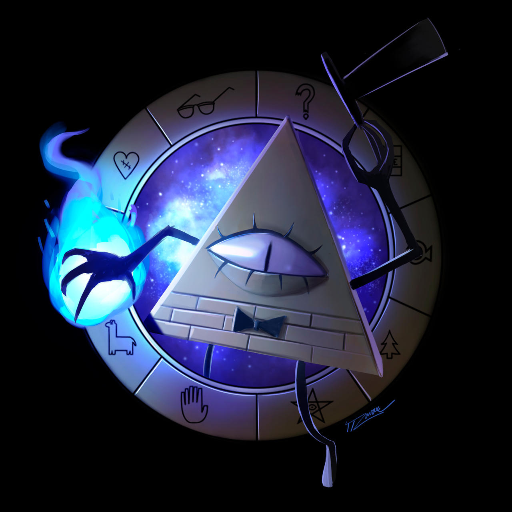

Summary
Got told to go investigate sus happenings at the docks that was resulting in UNSD supplies stuff being stolen. Talked to couple people there, mild abberant-phobia, old rough man guy type was helpful, Luke did something with his mouths that are on his hands and possibly-hop attempted to literally freeze them. got info it was likely a speedster messing with the docks for unknown reasons caught via trap with Onyxs biokinesis, Lukes wind, Aces speed-chase and I did something probably violent.
Held in wharehouse movie-style; ex-hop attempted to roast marshmellows on prisoners cuffs which were hot with his powers. Couple UNSD people (assumedly) arrived and took guy away, roughhandled, caused pain with power-supressing cuffs, dumped in van, definatly almost dead by now.
General bad feeling from team on this outcome.
Appearance notes: Caught guy had average humanoid appearance, brown hair, green eyes. Notably has brother held by UNSD in unknown location.
[could use technopath or other organisations to find]
reason for thievery unknown or unremembered, was mid scale theifing, ∴ was not theiving only for himself


It will not be repeated.
Some guard told us abt a superior le mysterious old top hat toter. Rescued kids, UNSD apparently took care of them. .. Can't remember what happened to the guy Onyx tied up in the forest. Tiffany Glossip removed the worm they used to 'window' one of the guards.
We were not supposed to murder everyone.